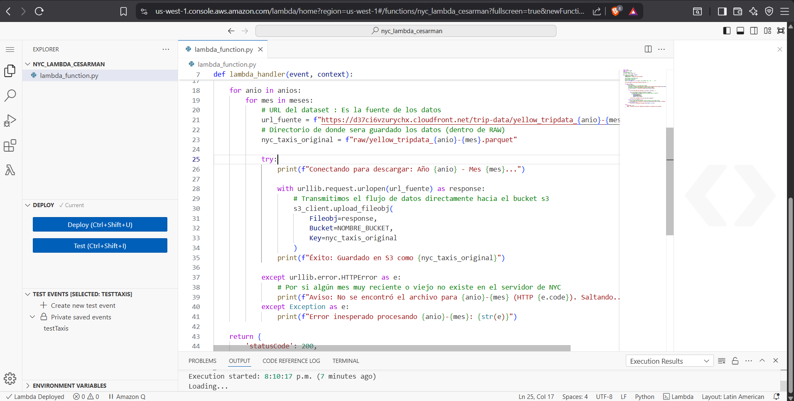
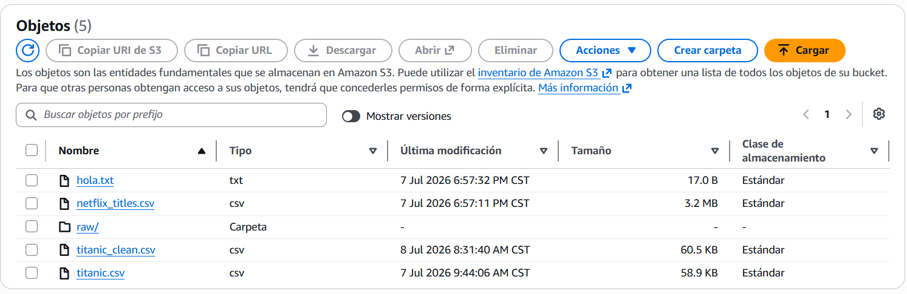
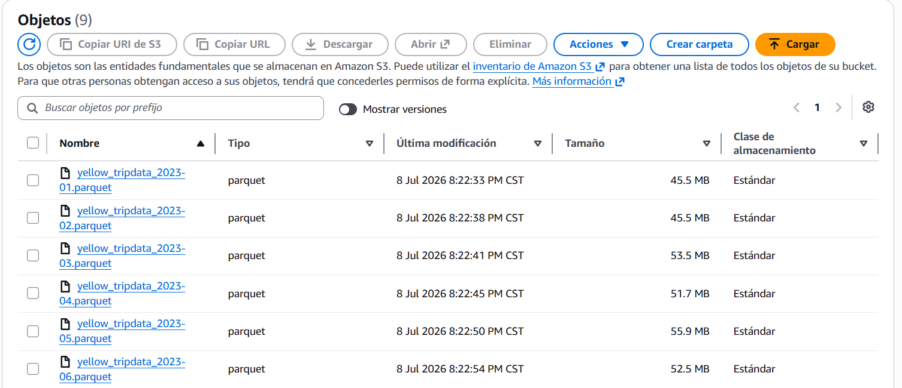

1. Código lambda_function.py
2. Evidencia de código ejecutándose en Python

3. Se crea una carpeta raw en S3

4. Se generan los archivos de NYC dentro de la carpeta raw

Estructura y flujo de trabajo del proyecto


